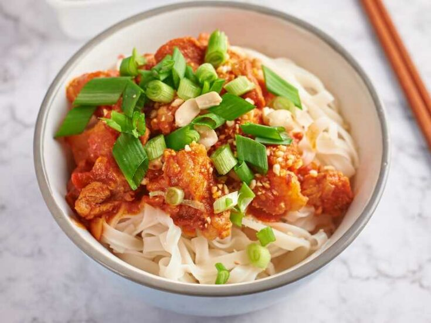

Shan Noodles

Description
Shan Noodles is sticky rice noodle with chicken tomato sauce
and lots of flavourful garlic, chilli and pickle toppings.
This noodle is very popular all across Burma, its originally
from the people of Shan state, Eastern Burma, border to
China, Laos and Thailand.
Shan noodles can either be served as a soup or as a salad,
and in both cases the sauce is similar. Only the noodles
are different.
Ingredients
- 300 g Chicken
- 200 g Dry rice Noodles
- 2 Vine Tomato
- 2 Shallots
- 13-16 Garlic cloves
- 1 tsp Paprika/Chilli powder
- 2 tsp Light soy sauce
- 1 tsp Dark soy sauce
- 1½ tsp Salt
- ¼ tsp Chinese five spices
- ½ cup Water
- 1 tbsp Water
- 2-3 Spring Onions
- 3-4 tbsp Sweet Soy sauce
- Crushed Roasted Peanuts to garnish
- 1 cup Oil
- 1 tbsp Sesame seed
- 2 tbsp Chilli flakes
- 1 Carrot
- 2-3 Green Chilli
- 1 tsp Sugar
- 1 tbsp Vinegar
Steps
- Heat oil to medium heat and add chopped garlic.
- Stir till the garlic turned into slightly brown.
- Add the sesame seeds stir for few seconds.
- Put in a small bowl and set aside.
- Add chilli flakes into a small bowl.
- Heat oil to medium high heat and pout into to chilli
flakes and mix well.
- Set aside.
- Julienne the carrot and cut the green chilli into thin
slices.
- Put in a bowl, add salt, sugar, vinegar , water.
- Mix well and set aside.
- Cut chicken into small pieces.
- Finely chop tomato, garlic and shallots.
- Heat oil and add garlic and shallots, saute for few
minutes till the color slighlty bown.
- Add chilli powder, follow by the chicken pieces.
- Stir for 1-2 minutes then add the chopped tomatoes.
- Cook few mins till the tomatos are soft.
- Add salt, light soy sauce, dark soy sauce, chinese
five spices, and ½ Cup of water.
- mix well and close the lid for 1-2 mins.
(Add more water as needed if the sauce is too thick.)
- Chicken tomato is ready. Set aside.
- Boil rice noodles per packet instructions, strain it.
- For serving, add one portion of noodle into the bowl.
- Add about 2 tbsp of chicken tomato curry, 1 tbsp garlic oil,
1 tsp chilli oil, peanuts, pickle, spring onions and 1 tsp
sweet soy sauce. (Add some salt if needed.)